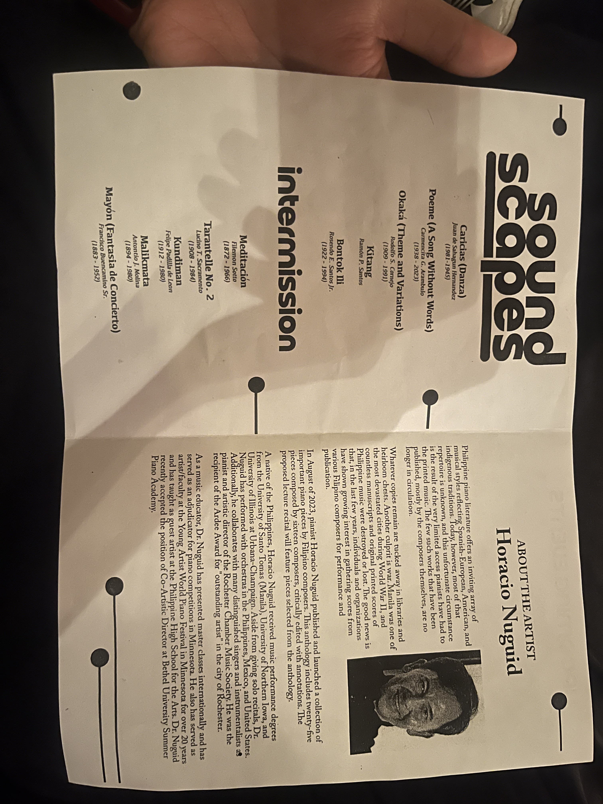
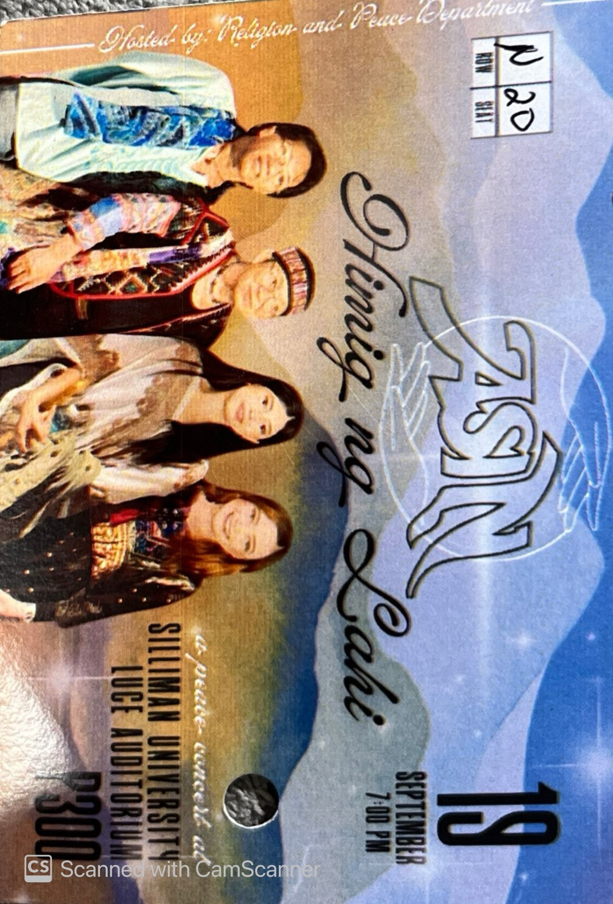
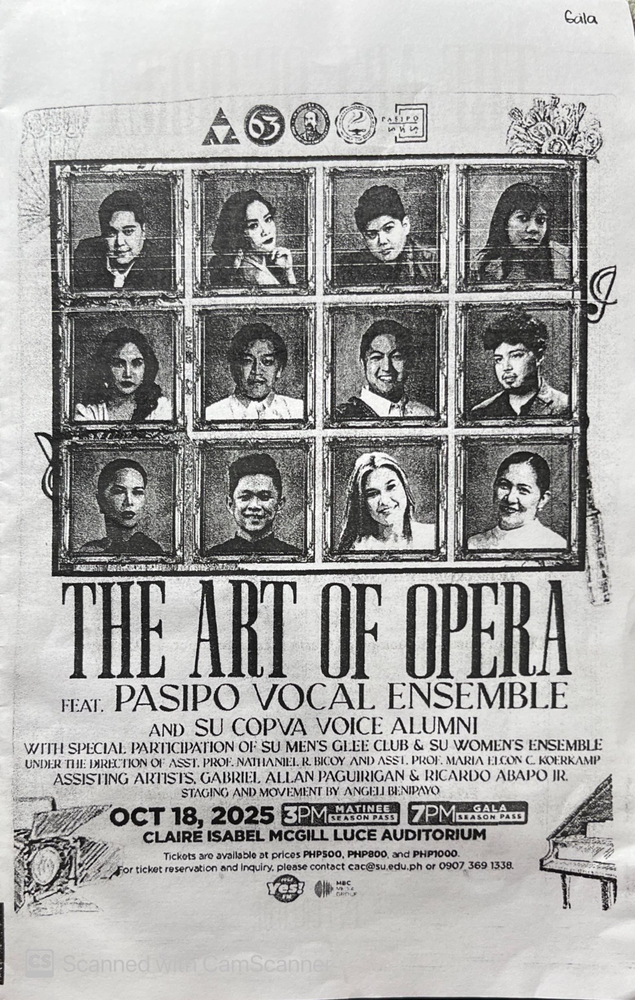
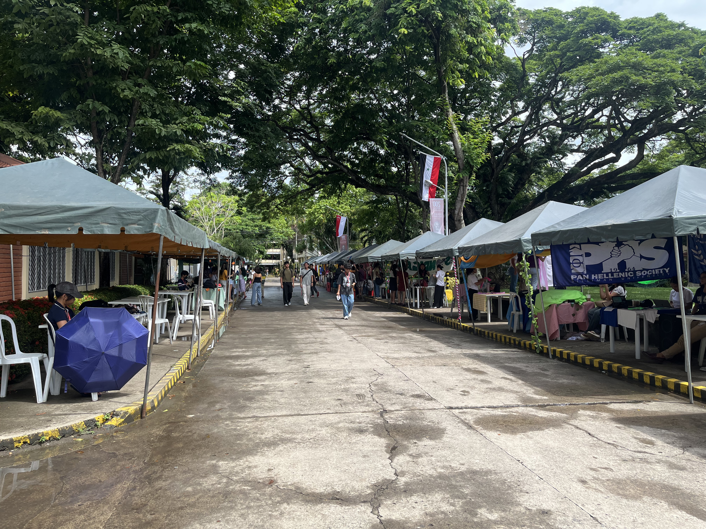

Swan Lake for me was a cultural moment. I have always heard about swan lake and I was very curious about what it actually was. I almost didn’t watch this show either because my relatives were in town.
For me, I was confused for half the show. I wish there was dialogue, I thought it would be a play where the actors would say lines to help with the story. But no, it was all dancing and ballet. I sat with my friends and even they were a bit confused with the story.
So at intermission, I googled the story of swan lake just to get an idea of what it was all about. And after realizing the story, I would say it was really nice. I'm just not a big fan of ballet and interpretative dance. I would rate the show an 8/10. It was good for what it was, the ballet part was very good, but it's just not my thing.
Sound Scapes
The Sound Scapes event was a one-man show of a pianist just playing classical songs on the piano. I didn’t recognize a single one of the songs, but I have learned to appreciate performances like this.
Going to these Luce Auditorium shows has given me a sense of appreciation for music and art. I would usually just say “it was bad” since I didn’t really understand it or wasn’t interested in it. But that shouldn’t take away from the performance or the show.
I really appreciate and envy those who can play the piano well. It is one of the instruments I wish I knew how to play and I wished I took lessons as a kid. This show was a nice glimpse of what could have been.

ASIN
What I liked most about the show is how they showed our culture through Filipino songs, poems, and even local instruments. It really made me proud to be Filipino because it reminded me of how unique and creative we are. I’ll cherish it by appreciating our own music more and carrying with me the values of unity and love for our country.
It became more than a performance; it became a celebration of Filipino identity. The showcase included some of the most beloved Filipino songs, stunning poetry readings, and native instruments such as the kulintang and bamboo flutes, some of which produce sounds we don't regularly hear in today's mainstream musical entertainment. Together with the performers' captivating vocals and oral emotionality, this created an experience that was entertaining and informative. This brought to mind that our culture is not only unique but rooted in creative flair and resilience. To me, watching the show made me proud and reminded me of the richness of our own traditions and the importance of culture and tradition, as we constantly modernize. I will carry this reflection with me to support local artists, appreciate traditional music more consciously, and live by being united in respect and love for our country.
The show evolved into something greater than a performance because it transformed into a celebration of Filipino heritage. The event presented classic Filipino music alongside poetic readings and traditional instruments including kulintang and bamboo flutes which generate sounds that are rare in modern commercial music. The performers' powerful vocals and emotional delivery of words combined with the musical elements to create an entertaining and educational experience. The event demonstrated that our cultural heritage combines distinctive elements of creativity with survival skills. The show experience strengthened my national pride while showing me the deep value of our cultural heritage and traditional practices during our ongoing process of modernization. The experience will stay with me to support local artists while I develop better awareness of traditional music and maintain unity through love and respect for our nation.

The Art of the Opera
After seeing the show, I noticed that my classmates were there, and I love listening to choirs and acapella. As a previous member of a school choir, I can really appreciate their voices and the talent of the opera singers. It was really cool to see the choir be part of the ensemble. Aside from the singing, I really could not understand the story of the opera (if there was one?) so it was like being at a concert in another language.
I loved the part where all the cast sang after the end of the show and it just looked like they were having fun while singing and just making beautiful music. For the actual performance, my favorite part was actually the part of the Silliman Chorus, (Pres des torrents qui grondent, Guilliaume Tell, G. Rossini).
For me, I can appreciate the performance of the singers and I recognize their incredible talent and gift of singing, but I wouldn’t go out of my way to listen to an opera. I would rather watch concerts and musicals and listen to music I can understand. No offense to opera singers, I think they are very talented.
I would rate the show a 7 out of 10. 7 because it was very impressive and I was sitting near the pianists and I was so amazed by their ability to read notes and play in unison and in harmony with each other. I deducted 3 because of my personal preference and opinions on operas. I would include a synopsis or explanation of the opera in the program so that some audience members can follow along with the show.

Silliman Parada Sillimaniana
This was one of the first times I actually joined the parade. In all my years in Silliman, I have never actually joined the parade, I have only seen it end at Cimafranca ballfield. It took so long for our part of the parade to move. We got there before 1:00pm and we started moving at around 3pm.
The parade was a lot of fun. It was cool to see the fruits of our labor during the parade. In truth, if we were given more time and budget for the float, we definitely could have made a better one. We did what we could.
The worst part of the parade was when it started to rain. It started to rain just as we reached the ballfield. Good thing it only started then, but we were all very wet, and our float was not in good shape during the rain.
Genesis
The Genesis event was at the start of the school year. It went on for around a week, but we only visited the event once and it was towards the end of the event. So most of the stalls were sold out, closing, and it was a bit empty already.
All school years need an event to start them off, and this event definitely did a good job at starting off and initiating the start of the school year.

SHS Tabo
SHS Tabo was a trip down memory lane. I was going to buy something from our old section’s stall but I didn’t bring any money. It was really nice to see SHS continuing the event. I still remember being in gr 11 and having to go to the grounds and buy all sorts of things.
I'm not sure if it was implemented this year, but during our time in SHS, we had to give the proceeds to donation. We had to be there so early to decorate our area, and in the end, I'm pretty sure we raised a lot of money. And, it was cool to see everyone in traditional Filipino attire, honoring our culture and tradition.